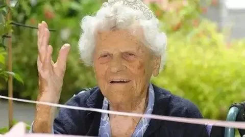

抗老高手 Ethel Caterham

116 歲，她是地球上目前有據可查、在世最長壽的人類。
Ethel Caterham，1909 年 8 月 21 日生於英格蘭漢普郡，2025 年 4 月底正式成為全球年齡最高的在世老人，也是英國有史以來最長壽的人，更是目前唯一一位生於 1900 年代並仍存活的已驗證人士。她在 110 歲感染新冠肺炎並且康復，97 歲才停止開車，在百歲之後還持續打橋牌。
當記者問她長壽的秘訣，她的回答只有一句話：「我從不和人爭論，我聆聽，然後按照自己的意思去做。」
這句話乍聽之下像是在打太極，但從代謝醫學的角度來看，她說的東西，指向了老化最核心的機制之一。
壓力、皮質醇，以及你的代謝年齡
人體在面對衝突、威脅或持續的社交摩擦時，大腦的杏仁核（amygdala）會觸發 HPA 軸（下視丘-腦垂腺-腎上腺軸，hypothalamic-pituitary-adrenal axis）的反應，皮質醇（cortisol）在幾分鐘之內飆高。急性的皮質醇反應是正常的生理保護機制，但長期、慢性的皮質醇偏高，對代謝的傷害是系統性的。
Ben Bikman 在多場演講中反覆提到這個機制：皮質醇會直接拮抗胰島素的作用，讓肌肉細胞對胰島素訊號視而不見。換句話說，慢性心理壓力本身，就是製造胰島素阻抗（insulin resistance）的機器，而胰島素阻抗幾乎是所有主要慢性病的上游。你沒有吃錯東西，你只是每天讓自己的神經系統處於備戰狀態。
在細胞層面，慢性高皮質醇會加速端粒（telomere）縮短，並促進細胞衰老（cellular senescence）。這些「殭屍細胞」雖然停止分裂，卻持續分泌發炎因子，污染周圍組織，加速整個器官的老化節奏。2024 年發表在《Frontiers in Aging》的研究系統性回顧了這條分子路徑，確認慢性心理壓力是獨立且可量化的老化加速因子。
Ethel 那句「從不爭論」，從這個角度來看，不只是個性，而是一種長達一世紀的皮質醇管理策略。
自主感：最被低估的長壽變數
她說「我聆聽，然後按照自己的意思去做」，這句話指向心理學裡一個被反覆驗證的概念：控制感（locus of control），也就是一個人對自己生命走向有多少自主權的主觀感受。
多項大型追蹤研究發現，對自己生活有較高內在控制感的人，不只死亡風險更低，連代謝指標都更漂亮。2019 年《PNAS》一篇追蹤超過 10 萬名受試者的研究指出，自我效能感（self-efficacy）和自主感，是比飲食習慣更強的長壽預測因子之一。
Ethel 在 97 歲還在自己開車，在花園裡獨自消磨時光，在照護機構裡仍堅持「按自己意思」生活。這不只是身體機能的問題，更反映了她對「自己的事自己說了算」這件事的持續堅持。在我的臨床觀察中，代謝指標維持最好的老年患者，往往也是那些對自己日常生活最有主導權的人，他們自己決定幾點睡、吃什麼、要不要見哪些人。
橋牌與認知活化
Ethel 在百歲之後仍持續打橋牌（contract bridge）。橋牌不是普通的消遣，它需要邏輯推理、記憶、機率計算和解讀對手意圖，同時刺激前額葉皮質和邊緣系統。研究顯示，定期進行這類複雜認知活動，能夠延緩海馬迴（hippocampus）的萎縮，降低失智症發生風險。
更重要的是，橋牌是一種社交型活動。社交連結本身，就是降低皮質醇、激活副交感神經（parasympathetic nervous system）最有效的天然工具之一。每一局橋牌，既是認知訓練，也是神經系統的一次放鬆儀式。
活到 116 歲，她沒有任何特別的飲食計畫
Ethel 本人一再強調，她沒有刻意執行任何特定的飲食或健康計畫。這個事實並不代表飲食不重要，而是讓我們看到另一個角度：長壽不一定需要完美的飲食，但幾乎都需要長期穩定的低壓力狀態。
從時代背景來看，Ethel 成長於二戰前後的英格蘭，18 歲就去了印度當 au pair，後來跟著擔任英軍中校的丈夫駐守香港和直布羅陀，在香港還設立了一間幼兒園。她的飲食環境幾乎不可能接觸到超加工食品（ultra-processed food）、精製種子油或高果糖玉米糖漿，這些全是現代代謝危機的核心元兇。這種「被動的乾淨飲食」，可能是默默支撐她代謝健康的隱形基礎。
那我們就是比較一下我們之前講過的各個長壽標竿
Jeanne Calment 活到 122 歲，每週吃將近 1 公斤的巧克力，每天抽菸，每天喝紅酒。Richard Overton 活到 112 歲，每天抽雪茄加威士忌。Ethel Caterham 活到 116 歲，從不爭論，按自己意思過日子。
這些人提醒我們：生命的長度，不是由任何單一變數決定的。心理狀態的穩定，以及長期維持低度壓力、高度自主的生活方式，可能是超百歲人瑞身上最一致的共同點。
這不是要大家學她去抽菸喝酒，而是要認真對待「不讓自己的神經系統長期處於備戰狀態」這件事。慢性心理壓力對代謝健康的傷害，不亞於每天多吃一份炸薯條，只是它沒有熱量標示，所以很多人選擇忽視它。
幾個可以現在就做的事
1. 識別生命中的慢性衝突源，判斷哪些「戰」是值得打的，哪些只是讓你每天消耗皮質醇的習慣性摩擦。
2. 增加生活中的自主感，不論是工作節奏、飲食選擇還是社交安排，多給自己幾個「我來決定」的片段。
3. 找一個需要社交和動腦的嗜好，棋類遊戲、樂器、讀書討論都好，定期的認知挑戰是大腦最有效的訓練。
4. 認真對待 HRV（心率變異性，heart rate variability），它是衡量自律神經平衡最直接的指標，長期壓力會讓 HRV 持續下降，這個數字比你的 BMI 更能預測代謝年齡。
Ethel 在 116 歲說：我聆聽，然後按照自己的意思去做。這可能是她給出的，最低調，也最精準的長壽處方。
參考資料
2. Guinness World Records – Ethel Caterham becomes world’s oldest person
3. Longevity Box – Ethel Caterham longevity secrets
5. Aging-Bio – Cortisol and chronic stress accelerate aging
（本文由我規劃架構與觀點，並協同 AI 校正與潤飾語句）
 空腹小雞跟思思醫師一起斷食，順便養一隻小雞來養小雞 →
空腹小雞跟思思醫師一起斷食，順便養一隻小雞來養小雞 →
好朋友週信
每週五一封：《健康駭客週報》這集的研究重點，加上家醫專欄這週的新文章。免費，隨時可以退訂。
延伸閱讀

抗老高手Nil Marino
尼爾·馬里諾是六十多歲的巴西健身模特，因嚴格的健身和健康習慣而保持年輕的外貌和結實健美身材。

腸道菌，直接控制你的粒線體
文中整理 Gundry《腦腸悖論》的觀點：腸道菌透過短鏈脂肪酸、血清素與內毒素影響粒線體，建議以多酚等飲食保護粒線體。

SS-31，粒線體修復的突破
心臟衰竭、老化的肌肉無力、記憶退化。三件看起來不相關的事，在細胞層面可能有同一個根源。2025 年 9 月，FDA 核准了史上第一個以「修復心磷脂」為機轉的藥物 elamipretide（SS-31）。